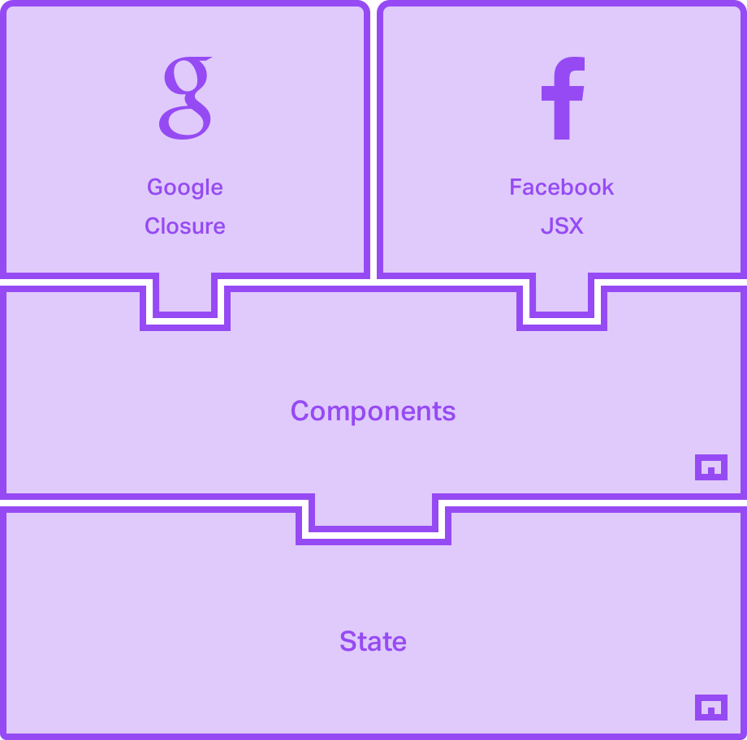

我们的架构
Metal.js 的主类是 State 和 Component 。 实际上 Component 继承自 State，因此包含了它所有的特性。 两者之间最主要的区别是 Component 的扩展特性是与渲染相关的。 因此如果模块不需要做任何渲染，则可以直接使用 State。 但是如果模块需要渲染逻辑，那么 Component 将更适合。
许多人都有自己最喜欢的处理渲染逻辑的方式。 有些人更喜欢使用与业务逻辑完全分离的模板语言，而另一些人则喜欢在相同的文件把两者写在一起。 Metal.js 不强制开发者选择其中的一种方式。 默认情况下，它提供了与 Google 的 closure 模板和 Facebook 的 JSX 的集成机制， 而且可以添加更多的选择，因为渲染层是可定制化的。
